O'tkir Yusupov

Utkir Yusupov (Uzbek: Oʻtkir Yusupov, Russian: Уткир Юсупов; born 4 January 1991) is an Uzbek professional footballer who plays as a goalkeeper for Navbahor Namangan and the Uzbekistan national team.[3] He is Uyghur.

Eldor Shomurodov
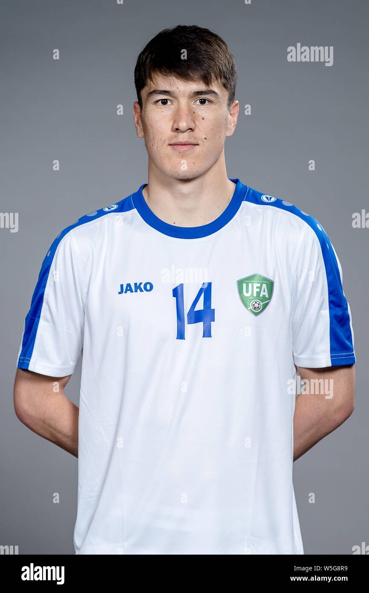
Eldor Azamat oʻgʻli Shomurodov (born 29 June 1995) is an Uzbek professional footballer who plays as a forward for Serie A club Cagliari, on loan from Roma. He also captains the Uzbekistan national team. He played in his homeland for Mash'al Mubarek and Bunyodkor before spending three years with Rostov in the Russian Premier League. In 2020, he moved to Genoa in Serie A for €8 million and a year later Roma for €17.5 million. After helping the under-20 team to the quarter-finals of the 2015 FIFA U-20 World Cup, he made his full international debut later that year and represented the country at the 2019 AFC Asian Cup.
Azizbek Omonov
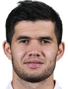
Azizbek Amanov (1997-yil 30-oktyabrda tugʻilgan) — oʻzbek futbolchisi, Fors koʻrfazi Pro-ligasi va Oʻzbekiston milliy futbol jamoasida “Estegʻlol” klubida qanot va hujumchi sifatida oʻynaydi.
Abbbosbek Fayzullayev
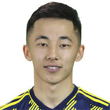
Abbosbek Fayzullaev 2003-yil 3-oktabrda Sirdaryo viloyatida tugʻilgan. Shuningdek Abbosbek Fayzullaev – Paxtakor futbol akademiyasi bitiruvchisi hisoblanadi. 2021-yilgacha Abbosbek Fayzullaev Paxtakor klubi oʻrinbosarlar tarkibida harakat qilgan[3]. Abbosbek Fayzullaev transfermarktdagi narxi 300 ming yevroni tashkil etadi (2022-yilgi maʼlumot)[4].
Igor Sergeyev
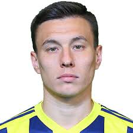
Igor Vladimirovich Sergeyev (Russian: Игорь Владимирович Сергеев; born 30 April 1993) is an Uzbek professional footballer who plays as a striker, most recently for BG Pathum United, and Uzbekistan.
Sherzod Temirov
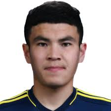
Sherzod Temirov (Uzbek Cyrillic: Шерзод Темиров; born 27 October 1998) is an Uzbek professional footballer who plays as a left winger and striker.[1][2] He is currently a free agent. He also played for Shurtan Guzar.
Otabek Shukurov
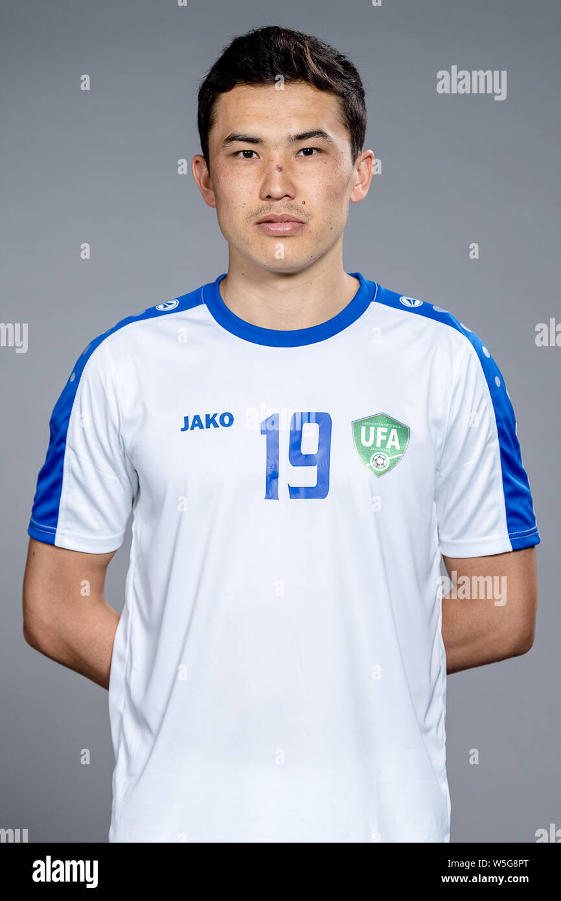
Otabek Shukurov (born 22 June 1996) is an Uzbekistani professional footballer who plays as a midfielder for Süper Lig club Fatih Karagümrük and the Uzbekistan national team.[
Oston O'runov
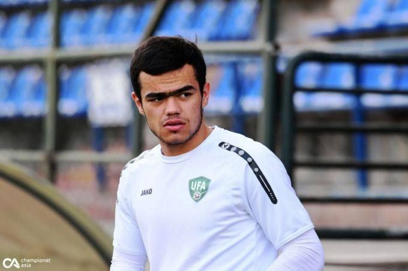
Oston Rustam oʻgʻli Urunov (born 19 December 2000) is an Uzbek professional footballer who plays as an attacking midfielder for Navbahor Namangan and the Uzbekistan national football team.[4
Dostonbek Hamdamov
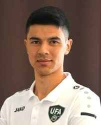
Dostonbek Khamdamov (Uzbek: Dostonbek Xurshid o'g'li Hamdamov, Uzbek Cyrillic: Достонбек Хуршид ўғли Ҳамдамов; born 24 July 1996) is an Uzbek professional footballer, Asian Young Footballer of the Year2015,[2][3] winner of the Asian Youth Championship 2018[4][5] and plays as a winger for Pakhtakor[6] and the Uzbekistan national team.
Jaloliddin Masharipov
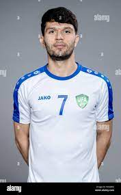
Jaloliddin Masharipov 1993-yil 1-sentyabr kuni Urganch shahrida tugʻilgan. Jaloliddin Masharipov 2013-yilgacha „Paxtakor“ jamoasida toʻp surgan. 2013-yilda Oʻzbekiston yoshlar terma jamoasi tarkibida 4 ta oʻyinda ishtirok etgan. 2017-yilda Toshkentning „Lokomotiv“ klubida boʻlgan. 2021-yilda Jaloliddin Masharipov „Al-Nasr“ jamoasiga kelib qoʻshilgan.
Rustam Ashurmatov
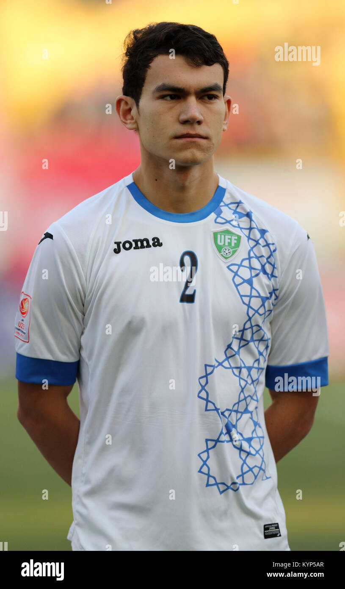
Rustam Ashurmatov (Uzbek: Рустам Ашурматов; born 7 July 1996), sometimes spelt as Rustamjon Ashurmatov, is an Uzbek footballer who plays as a defender for Russian club FC Rubin Kazan.
Farrux Sayfiyev
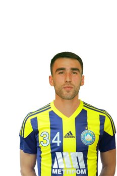
Farrukh Sayfiyev (born 17 January 1991) is an Uzbek professional footballer who plays as a left-back for Pakhtakor and the Uzbekistan national team.[
Islomjon Qobilov
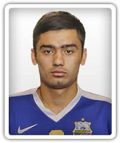
Islom Qobilov (1997-yil 1-iyulda tugʻilgan) – oʻzbekistonlik futbolchi, hozirda „Lokomotiv“ jamoasida oʻynaydi
Valijon Rahimov
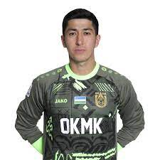
Born: February 16, 1995 (age 28 years) Current teams: FC AGMK (#25 / Goalkeeper), Uzbekistan national football team (Goalkeeper)
O'tkir Yusupov
Utkir Yusupov (Uzbek: Oʻtkir Yusupov, Russian: Уткир Юсупов; born 4 January 1991) is an Uzbek professional footballer who plays as a goalkeeper for Navbahor Namangan and the Uzbekistan national team.[3] He is Uyghur.
Srechko Katanes
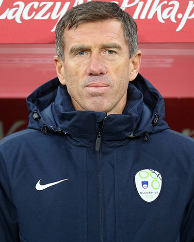
Srechko Katanets (sloven. Srečko Katanec; 1963-yil 16-iyul, Lyublyana) — yugoslaviya va sloveniyalik futbolchi va murabbiy, Oʻzbekiston milliy terma jamoasi bosh murabbiyi.